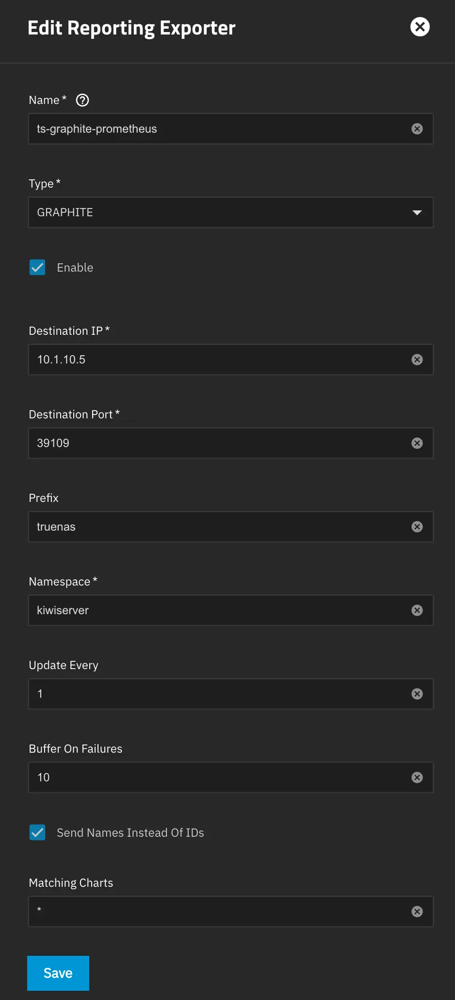

TrueNAS Grafana 监控教程 graphite exporter
来源
https://github.com/Supporterino/truenas-graphite-to-prometheus
还是建议自己看文档
PS：25.04的官方exporter关闭了很多信息，所以采集不全，比如内存和Disk信息。
介绍
首先需要个Grafana监控，主要是Grafana上看一切方便点。
原理
官方用Netdata，早期还直接提供netdata面板，为了"安全"，现在只有exporter，同时是GRAPHITE的，那么就需要个Graphite到Prometheus的转换，来源的链接给你做好了。
部署
Graphite-Prometheus的转换 Docker
没什么要说的，这里我用的39109连接TrueNSA ，39108是给prometheus连接的
1
2
3
4
5
6
7
8
services:
ts-graphite-prometheus:
image: ghcr.io/supporterino/truenas-graphite-to-prometheus
ports:
#to graphite
- 39109:9109
#to prometheus
- 39108:9108TrueNAS exporter设置
如下，要注意的是
- Destination IP和Port是你部署上面那个Docker的IP和to graphite的Port。
- Perfix注意是truenas不能改
- Namespace随意
- 其他照抄

部署Grafana和Prometheus
网上到处都是，我随便给个例子
首先是部署
1
2
3
4
5
6
7
8
9
10
11
12
13
14
15
16
17
18
19
20
21
22
23
24
25
services:
prometheus:
image: prom/prometheus
container_name: prometheus
ports:
- 58474:9090
networks:
- monitor
volumes:
- $DOCKER_DATA/prometheus/config:/etc/prometheus
command:
- --config.file=/etc/prometheus/prometheus.yml
restart: always
grafana-oss:
container_name: grafana
restart: always
networks:
- monitor
ports:
- 38533:3000
volumes:
- $DOCKER_DATA/grafana/config:/var/lib/grafana
image: grafana/grafana-oss
networks:
- monitor然后你需要去修改Prometheus的配置，你上面创建完没配置也会提示报错
我的路径在$DOCKER_DATA/prometheus/config/prometheus.yml，你们的自己看着替换
最后要加个Truenas的job，targets需要修改成上面部署那个Docker的IP和to Prometheus的Port。
1
2
3
4
5
6
7
8
9
10
11
12
global:
scrape_interval: 15s # By default, scrape targets every 15 seconds.
scrape_configs:
- job_name: 'prometheus'
scrape_interval: 5s
static_configs:
- targets: ['localhost:9090']
- job_name: 'truenas'
scrape_interval: 1s
static_configs:
- targets: ['10.1.10.5:39108']重启一下你的Prometheus。
Grafana添加数据源和面板
数据源：Connection - Data sources - Add New data source - 选择 Prometheus - 在Prometheus server URL里填入http://prometheus:9090- 到最后Save $ test 即可
`
面板：
首先选择你的面板
https://github.com/Supporterino/truenas-graphite-to-prometheus/tree/main/dashboards
正常直接用truenas_scale.json，复制里面内容
Dashboard - New - Import - 在Import via dashboard JSON model里 粘贴 - Load - Mimir里面选你刚刚创建的数据源，就行了。